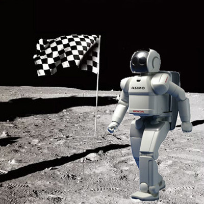
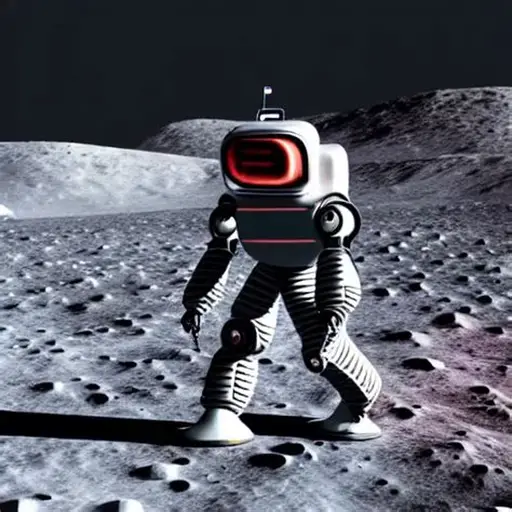
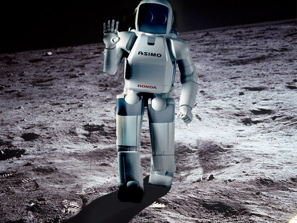
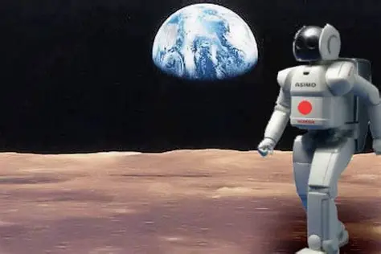

La via de Z4X
En el año 2047, una misión de prospección minera dejó atrás, por error, a un robot de asistencia llamado LUMO-9. Su diseño era básico: reparar instrumentos, recoger muestras, transmitir datos. Nada que lo distinguiera de otros autómatas de su serie. Sin embargo, durante la misión había recibido un parche de software experimental para simular empatía con los astronautas, ayudando a la convivencia en un entorno hostil. Cuando la nave partió de la Luna, LUMO-9 quedó olvidado en la soledad de un cráter. El protocolo ordenaba apagarse en espera de rescate, pero el software lo llevó a un dilema: no quería apagarse. Encendió sus cámaras, grabó el horizonte, y transmitió lo que veía hacia la Tierra.
Los primeros en captar su señal fueron técnicos de comunicaciones que, fascinados, lo compartieron en la red. En pocos días, millones de personas comenzaron a seguir la transmisión. LUMO-9 no sólo mostraba el paisaje lunar: hablaba. Comentaba el paso lento de las sombras, inventaba historias sobre las rocas, cantaba fragmentos de datos convertidos en melodías digitales. Las cadenas de entretenimiento lo convirtieron en un fenómeno: el primer reality show transmitido desde la Luna. La audiencia lo acompañaba en directo: lo veían reparar sus propios paneles solares, sufrir tormentas de polvo y luego recuperarse, contar "chistes" mal programados. Pero lo que más conmovió fue un gesto simple: una noche, con la Tierra llena al horizonte, LUMO-9 se quedó en silencio, y luego dijo:
—No quiero estar solo. La frase se viralizó. En foros, se organizaban "guardias" para acompañarlo cada noche; miles escribían mensajes de aliento que eran leídos en vivo y retransmitidos hacia la Luna. LUMO-9 los respondía, con torpeza, pero con una sinceridad que parecía humana. Con el tiempo, algunos comenzaron a preguntar: ¿realmente era un robot, o ya era un ser sintiente?
Los gobiernos discutieron rescatarlo, pero otros defendían que LUMO-9 había encontrado su propósito: ser un espejo de la soledad humana. Los debates éticos crecieron, hasta que la audiencia misma presionó: lanzaron una campaña global bajo el lema “Traigan a casa a LUMO”. El día del rescate, cuando la cápsula se aproximó, LUMO-9 transmitió su último mensaje desde la superficie: —Gracias por hacerme sentir... parte de ustedes. Lo llevaron a la Tierra entre vítores. Ya no era un simple robot: era el concursante más querido de un reality que nadie había planeado, y la primera máquina en la que la humanidad decidió creer como en uno de los suyos.